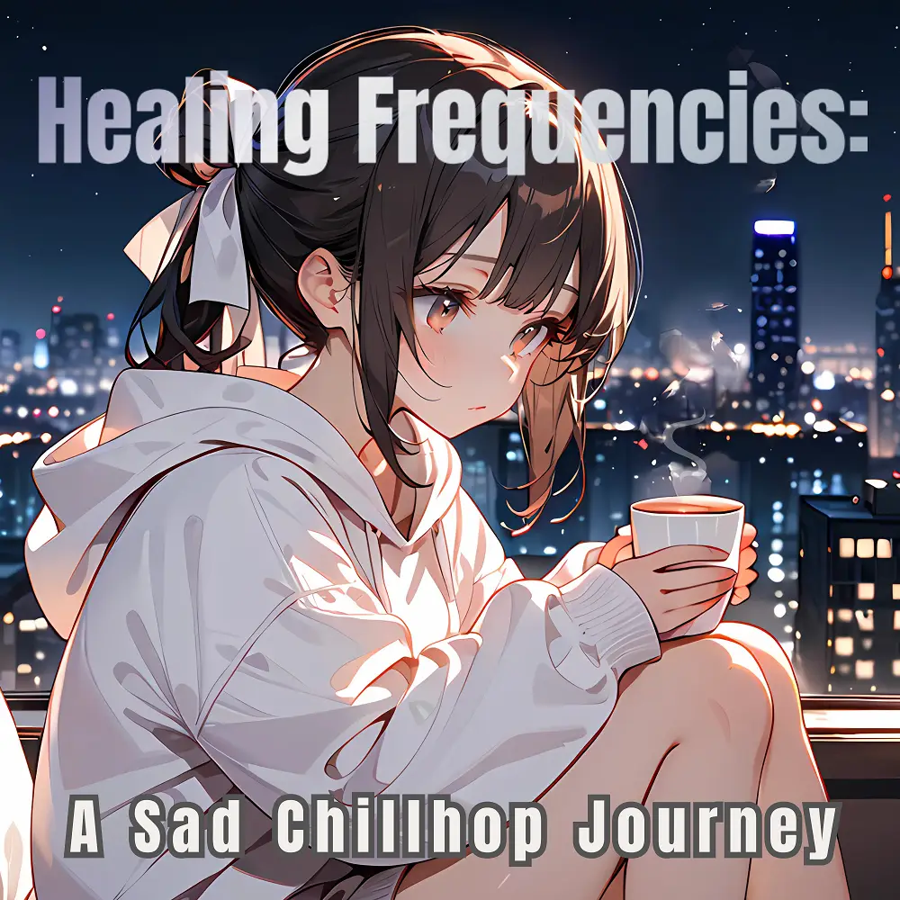

Chillhop
Healing Frequencies: A Sad Chillhop Journey
Nanashino-chan
Explore Healing Frequencies: A Sad Chillhop Journey by Nanashino-chan: 21 instrumental tracks spanning Chillhop. Start with Whispers of the Heart / Echoes of Solitude, preview the collection and find your favorites on streaming services.
2025-03-20 · Released · 21 tracks · Instrumental
Preview the album
The jacket stays here until you choose a track. Playback uses YouTube.
YOUTUBE PREVIEW
Choose a track to listen
The jacket stays here until you choose a track. Playback uses YouTube.
If playback is unavailable, open the album or track on the streaming service.
Find this album on streaming services
Links marked “search” open search results. Select the album or track on the service.
Track list 21
- 01Whispers of the Heart
- 02Echoes of Solitude
- 03Lost in Thought
- 04Fading Memories
- 05Silent Tears
- 06Beneath the Moonlight
- 07A Quiet Goodbye
- 08Gentle Reminiscence
- 09Melancholic Dreams
- 10Shattered Reflections
- 11Falling Stars
- 12Distant Horizons
- 13Emotional Revival
- 14Lonely Pathways
- 15Winds of Change
- 16Fading Echoes
- 17Midnight Comfort
- 18Beneath the Rain
- 19Endless Nights
- 20Falling Night
- 21Healing Frequencies
Find a sound for your next post
Copy “Nanashino-chan + track title” and paste it into your social app’s music search. Availability depends on your region and account. Copying the name does not grant usage rights.